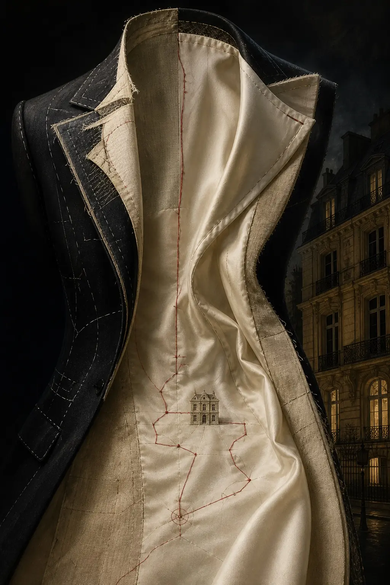

Récit explorable · édition illustrée · dix chapitres
La Doublure
Chez Louvel, dernière grande maison indépendante de l’avenue Montaigne, les collections fuient avant les défilés. Anouk Berthier, agente infiltrée comme seconde assistante, apprend que la couture est un sport de combat.
Carnet A.B. · pièce cousue
Codex
Carnet de mission d’Anouk Berthier — tenu à l’encre, cousu dans une doublure, relu trop tard, comme tous les carnets.